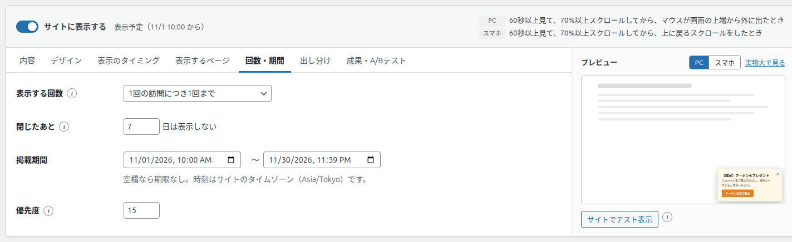
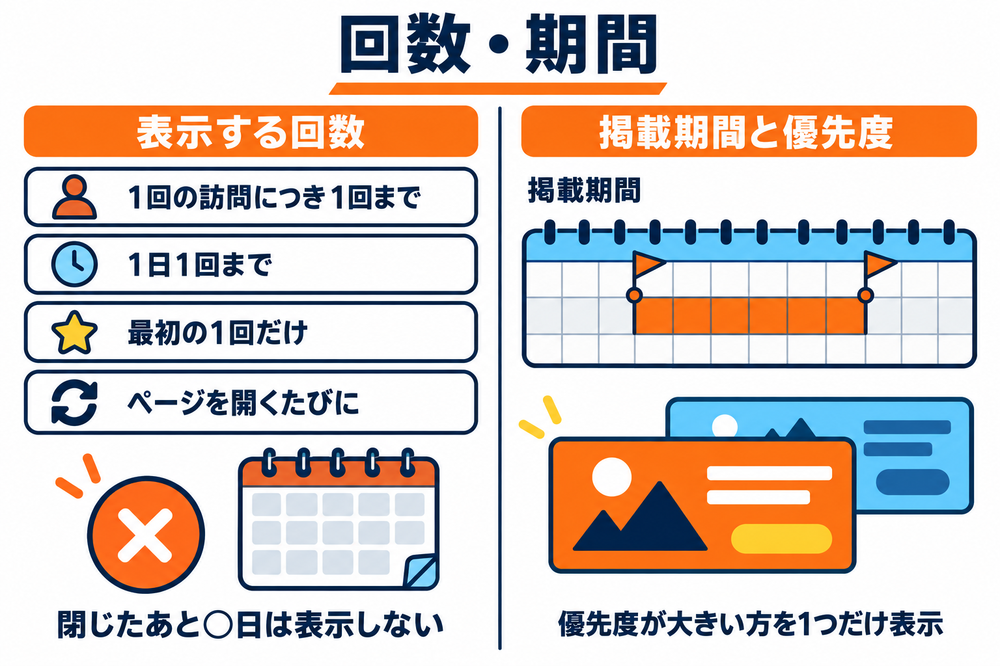

回数・期間タブ
同じ人に何回表示するか、閉じた人にいつまで表示しないか、いつからいつまで表示するか、ほかのバナーとどちらを優先するかを決めるタブです。


項目の一覧
| 項目 | 種類 | 初期値 | 入力できる範囲 |
|---|---|---|---|
| 表示する回数 | プルダウン | 1回の訪問につき1回まで | 4つの選択肢 |
| 閉じたあと ○ 日は表示しない | 数字（日） | 7 日 | 0〜365 日 |
| 掲載期間 | 日時 〜 日時 | 空（期限なし） | - |
| 優先度 | 数字 | 10 | 0〜100 |
表示する回数
| 選択肢 | 表示する回数 |
|---|---|
| 1回の訪問につき1回まで（初期値） | 1回の訪問の間に1回だけ表示します。ページを見なくなってから 30 分たつと、次の訪問として数えます。同じブラウザなら、別のタブで開いても同じ訪問です。 |
| 1日1回まで | 1日に1回だけ表示します。日付が変わると、また表示できます。 |
| 最初の1回だけ（以後は表示しない） | 一度表示したら、その後は表示しません。 |
| ページを開くたびに | ページを開くたびに、表示のきっかけが起きれば表示します（1つのページで表示するのは1回です）。 |
回数は、訪問者のブラウザごとに数えます。別のブラウザや別の端末で見たとき、ブラウザの閲覧データを消したときは、はじめから数え直します。
閉じたあと ○ 日は表示しない
訪問者がバナーを閉じたら（× ・Esc キー・暗い背景のクリック）、指定した日数の間はそのバナーを表示しません。0 にすると、閉じても上の「表示する回数」の決まりどおりに再び表示します。
- ボタンを押してリンク先へ移動したときは、「閉じた」には数えません。
掲載期間
バナーを表示する期間の、始まりと終わりの日時を決めます。
- 空欄なら期限なしです。始まりだけ、終わりだけでも決められます。
- 時刻は、WordPress の設定にあるサイトのタイムゾーンで判断します（欄の下に表示されます）。
- 始まりの前は一覧で「表示予定（月/日 時:分 から）」、終わったあとは「掲載終了」と表示されます。
- 日時の欄の表示の形（年月日の並び）は、お使いのブラウザによって違います。
優先度
ほかのバナーと同時に表示のきっかけが起きたときに、どちらを表示するかを決める数字です。数字が大きいほうを1つだけ表示します。同じ数字なら、先に作ったバナーを表示します。
おすすめ: 期間限定のキャンペーンなど、一時的に優先したいバナーは優先度を大きく（例: 50）し、いつも出しておくバナーは初期値（10）のままにしておくと、期間中だけキャンペーンが優先されます。